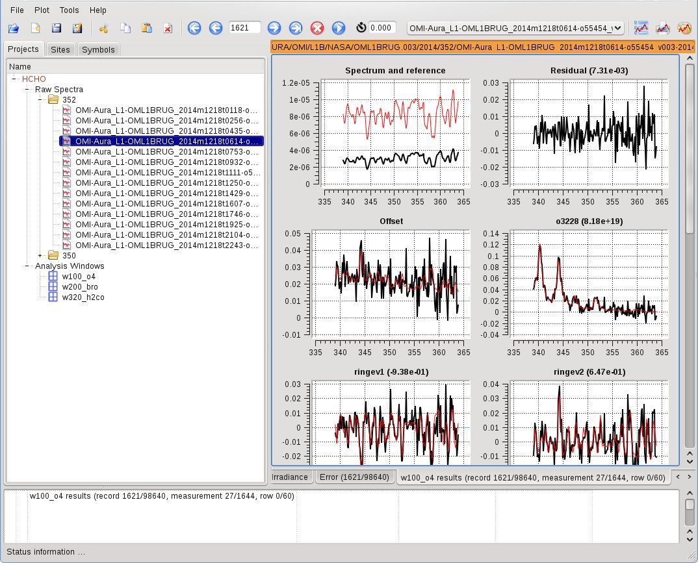
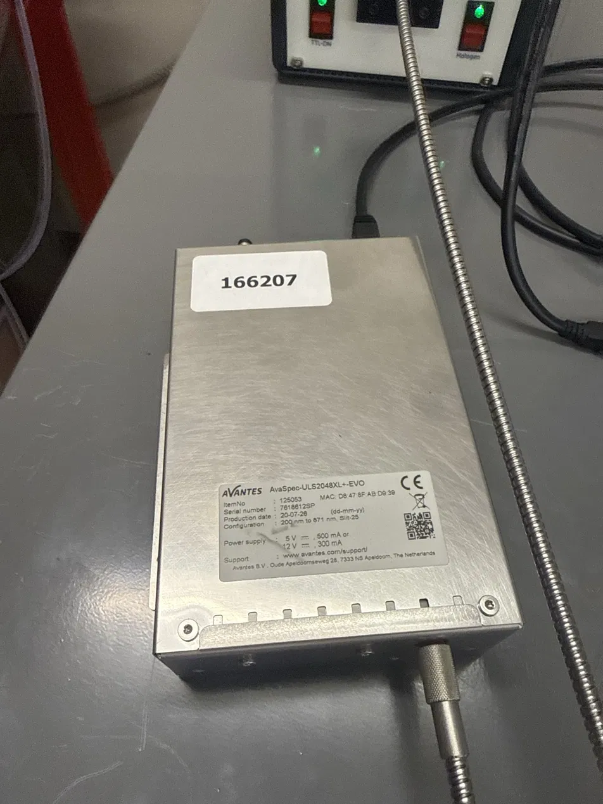
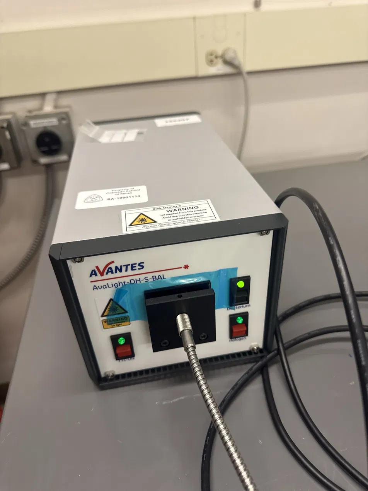
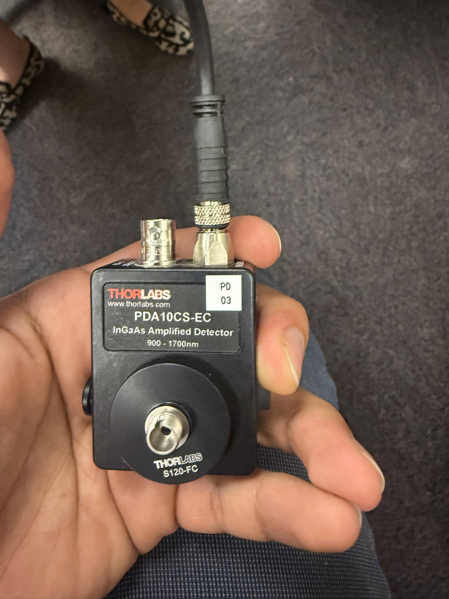
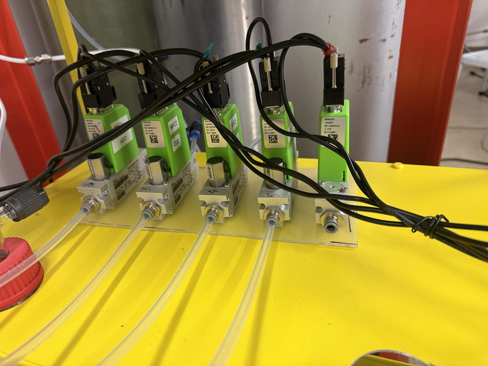
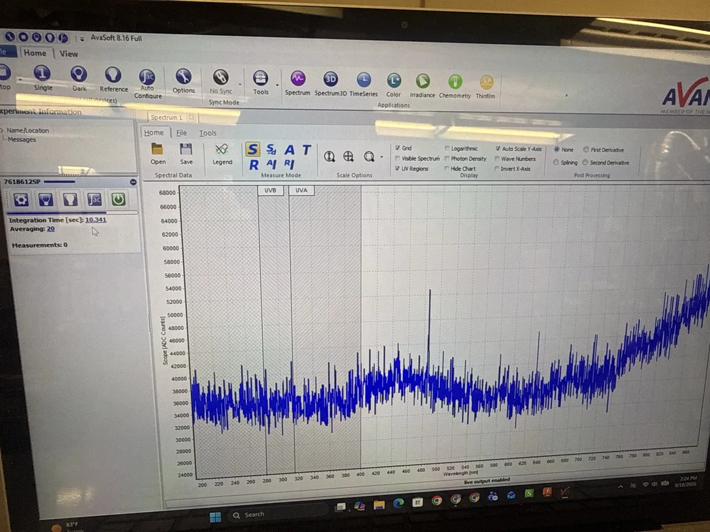
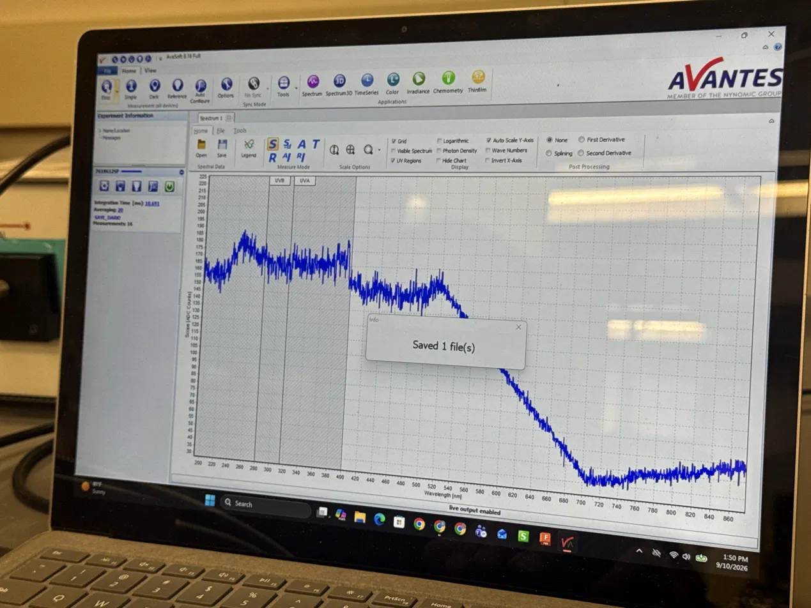

Look closer: the three species this instrument targets
Click one to see its structure and why it matters to CO2-stream purity.
One of the three species this software has to pull out of the differential absorption spectrum, per the project's own goal statement. NOx typically shows up as a byproduct of combustion or upstream process chemistry, riding along in the CO2 stream being monitored.
Marked at ~23% of the scope trace above for illustration only — the real band position isn't confirmed yet.
The second target species. SOx generally traces back to sulfur-containing feedstock or contamination further up the process — a signature worth catching before it travels downstream with the CO2.
Marked at ~53% of the scope trace above for illustration only — the real band position isn't confirmed yet.
Residual moisture in the CO2 stream — a target in its own right, and also a complication: water vapor's own absorption structure can overlap with NOx and SOx features, which is part of why the fit needs to separate all three at once rather than one at a time.
Marked at ~80% of the scope trace above for illustration only — the real band position isn't confirmed yet.
How the pieces would connect
Two independent acquisition channels, on two different vendor SDKs, both feeding the same calibration and deconvolution logic. Click any piece for what it actually is. This is the current working plan — none of the software boxes below exist as code yet.
Click any piece above — hardware, file format, or module — for what it actually is and where it stands.
First, what is QDOAS?
QDOAS is the DOAS field's reference software — maintained by BIRA-IASB (the Royal Belgian Institute for Space Aeronomy). Feed it a measured spectrum and a reference spectrum, and it fits known gas cross-sections to whatever structure is left over between the two, using a Marquardt-Levenberg non-linear least-squares fit. It's BSD-3-Clause licensed, so nothing stops this project from adapting it directly instead of starting from zero.
What QDOAS actually looks like
Real screenshots — one from BIRA-IASB's own site, three read directly out of the official manual.

Then: build on QDOAS, or write our own?
QDOAS is the field's reference DOAS software — BSD-3 licensed, free to adapt. The open question is how directly to depend on it. None of these four is chosen yet.
Call doas_cl directly
Reuse QDOAS's conventions
Port QDOAS's method
Reimplement in Python
Libraries and SDKs, specifically
What's actually involved on each side, and which option is the one to evaluate first.
Core
This is the toolbox everything else is built with. Python is the language the whole project is written in; numpy and scipy do the actual math; matplotlib draws the plots.
scipy.optimize.least_squares / curve_fit are the natural tools for the DOAS non-linear fit if Option B is chosen.Spectrometer side (AvaSpec / AvaSoft) only if live control is ever needed
These only matter if the software should ever reach out and pull a live reading straight from the instrument. Right now, the actual need is simpler than that — just reading files AvaSoft already saved.
Reading already-exported files the actual current need
This is the piece that actually matters today — turning a file AvaSoft already saved to disk into numbers Python can work with. Nothing here talks to the instrument itself.
DAQ side (Analog Discovery 3 / Thorlabs PDA10CS-EC)
The equivalent toolbox, but for the other sensor — the one reading IR/humidity instead of UV-Vis light. Different vendor, different SDK, same basic job: turn a raw signal into numbers.
If the QDOAS path is chosen (Option A1)
Only needed if the project ends up calling QDOAS directly. Its preferred output format needs its own reader to open reliably in Python.
doas_cl's NetCDF output reliably — preferable to its ASCII output, which appends instead of overwriting.The actual hardware, in the lab

AvaSpec-ULS2048XL+-EVO
The UV-Vis spectrometer itself — reads directly off the nameplate.

AvaLight-DH-S-BAL
The broadband light source — deuterium + halogen lamps, switched independently.

Thorlabs PDA10CS-EC
The IR/humidity channel's detector — a separate signal path from the spectrometer, read via the Analog Discovery 3.

Sensirion MFC array (×5)
Gas-mixing manifold that doses the CO2 stream's impurities — confirmed 5 units, labels visible on 3.
No public datasheet on file — an Excel tool + Python control script already exist in the lab for dosing.
AvaSoft, the vendor control software

Live view — Scope mode
This is what's actually on screen during a live measurement: Scope (ADC Counts) vs. wavelength, 200–871 nm — not absorbance yet. Integration time, averaging, and the Dark / Reference / Sample buttons are all visible in the ribbon.

Saving a spectrum
The "Saved 1 file(s)" confirmation after a Save — this is the exact workflow that produces the .RAW8 file this console's Architecture tab is waiting on a real copy of.
Confirmed, from the lab laptop itself
The Dark/Reference/Sample sequence has to run before absorbance can be computed — a raw exported spectrum is Scope data, not ready-to-use absorbance.
Reference documents
Both downloaded directly from Avantes, version-controlled in docs/datasheets/avasoft/.